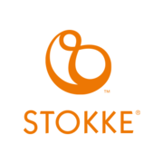
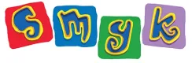

홈 > 브랜드 매거진 > 스토케
스토케
스토케(Stokke)는 1932년 노르웨이에서 설립된 어린이 가구·유아용품 제조사이다.
산업 분야 홈·라이프스타일 · 공개 등급 자료 기반 · 브랜드 평가 4.3 ★


한눈에 보는 브랜드
스토케(Stokke)는 1932년 노르웨이 올레순(Ålesund)에서 게오르그 스토케가 설립한 프리미엄 유아용품 브랜드다. 1972년 디자이너 피터 옵스비크가 설계한 트립트랩(Tripp Trapp) 하이체어로 유아 가구 시장을 재정의했고, 이 의자는 전 세계 누적 1,200만 대 이상 판매됐다.
2023년 매출은 약 29억 크로네 규모로, 유모차·하이체어·육아 가구 전반을 아우르는 고가 포지션을 지킨다.
브랜드 관점
스토케의 핵심 차별점은 한 번 사면 오래 쓰는 설계다. 트립트랩은 발판과 좌판 위치를 조절해 영아기부터 성인까지 사용하도록 만들어졌고, 익스플로리(Xplory) 유모차는 아이를 부모 눈높이에 가깝게 올려 시선 교감을 강조한다.
범용 보급형과 달리 디자인 완성도와 내구성을 묶어 고가를 정당화하는 구조다. 한국 맥락에서 특히 의미가 큰데, 소유주가 넥슨 창업자 고 김정주 계열 NXC의 벨기에 투자사 NXMH이기 때문이다.
한국에서는 '유모차계의 벤츠'로 불리며 프리미엄 육아 소비를 대표하는 상징으로 자리 잡았고, 저출산 속에서도 고가 영유아 시장의 견조함을 보여주는 사례로 꼽힌다.
시작과 성장
출발은 유아용품이 아니라 일반 가구였다. 1932년 게오르그 스토케는 노르웨이 서부 올레순에서 버스 좌석과 성인용 가구를 만드는 회사를 세웠다.
전환점은 1972년이었다. 디자이너 피터 옵스비크가 자신의 어린 아들 토르가 기존 하이체어를 졸업했지만 식탁에는 너무 작다는 문제를 풀기 위해, 좌판과 발판 높이를 단계별로 조절하는 트립트랩을 설계해 출시했다.
아이를 가족 식탁의 동등한 구성원으로 앉히는 발상은 시장에서 큰 반향을 얻었고, 회사는 이를 계기로 유아용품 전문 브랜드로 방향을 틀었다. 이후 아이를 높이 올려 부모와 교감하게 한 익스플로리 유모차 등으로 제품군을 넓히며 유럽을 넘어 북미·아시아로 국제 확장을 이어갔다.
브랜드 아이덴티티
브랜드 정체성의 중심에는 아이의 발달과 가족 간 유대가 있다. 모든 제품은 아이를 부모 곁으로 끌어당기고 성장을 돕는다는 공통 목적을 공유한다.
미학적으로는 자연 소재와 절제된 형태를 중시하는 스칸디나비아 디자인 원칙을 따르며, 군더더기 없는 워드마크 로고로 일관된 인상을 준다. 타깃은 가격보다 디자인과 안전·지속성을 우선하는 프리미엄 부모층이다.
'Here We Grow' 같은 플랫폼에서 보듯, 보이스는 따뜻함과 연결, 성장의 순간에 초점을 맞춘다.
제품과 서비스
대표 제품은 트립트랩 하이체어와 익스플로리·요요(YOYO)·트레일즈(Trailz) 등 유모차 라인이다. 트립트랩은 약 삼십오만 원대(미화 349달러)부터, 익스플로리는 칠십만 원대 이상에서 형성된다.
자사 온라인몰과 백화점·프리미엄 유아 전문 채널을 통해 유통한다.
현재 상태
소유주는 NXC(넥슨 지주사) 산하 벨기에 투자사 NXMH로, 2013년 12월 창업 가문으로부터 전 지분을 인수했다. 본사는 노르웨이에 있다.
2023년 매출은 약 29억 크로네(전년比 31.5% 증가), 상각전영업이익은 약 5.9억 크로네였다. NXC는 약 7천억 원(미화 4억8천만 달러) 규모로 매각을 추진 중이다.
타임라인
정리된 연도형 이벤트가 없습니다.
BI/CI 변천사
함께 읽을 브랜드
 홈·라이프스타일 · 편집 검수알레시
홈·라이프스타일 · 편집 검수알레시알레시(Alessi)는 1921년 조반니 알레시가 이탈리아 오메냐에서 설립한 주방·생활용품 디자인 브랜드다. 금속 가공 공방에서 출발해 세계적 건축가·산업디자이너와...
OL
오롤리데이
홈·라이프스타일 · 자료 기반오롤리데이오롤리데이는 행복을 핵심 콘셉트로 내세운 한국 디자인·라이프스타일 브랜드다. 삶을 더 행복하게 만드는 다정한 제품을 만든다는 정체성을 내걸고 문구와 잡화를 중심으로...
 홈·라이프스타일 · 편집 검수빅
홈·라이프스타일 · 편집 검수빅빅(BIC)은 1945년 마르셀 비크가 프랑스에서 설립한 일회용 소비재 브랜드다. 볼펜·라이터·면도기를 중심으로 저가·대량생산 일상용품을 만들며, 1950년 출시한...
SI
시디즈
홈·라이프스타일 · 자료 기반시디즈시디즈는 사무용 가구 기업 퍼시스그룹 계열의 인체공학 의자 전문 브랜드다. 장시간 앉는 환경을 전제로 한 인간공학 설계를 핵심으로 사무용 의자, 학생용 의자, 게이밍...
 홈·라이프스타일 · 편집 검수Here East
홈·라이프스타일 · 편집 검수Here EastHere East는 2014년에 기록된 Placemaking 계열의 브랜드 아이덴티티 사례입니다. DNCO가 아이덴티티 작업의 디자이너로 기록되어 있습니다. 타입,...
70
70 Hudson Yards
홈·라이프스타일 · 편집 검수70 Hudson Yards70 Hudson Yards는 2025년에 기록된 Property 계열의 브랜드 아이덴티티 사례입니다. DNCO가 아이덴티티 작업의 디자이너로 기록되어 있습니다. 공...

홈·라이프스타일 · 자료 기반Smyk스미크(Smyk)는 1952년 폴란드에서 시작한 영유아·아동용품 소매 체인이다. 의류·신발·장난감·학용품을 아우르는 폴란드 대표 아동용품 소매업체다.
 미디어·엔터테인먼트 · 자료 기반넥슨
미디어·엔터테인먼트 · 자료 기반넥슨넥슨(Nexon)은 1994년 김정주가 설립한 한국 출신의 비디오 게임 개발·퍼블리싱 기업으로, 메이플스토리·던전앤파이터 등으로 알려져 있다.